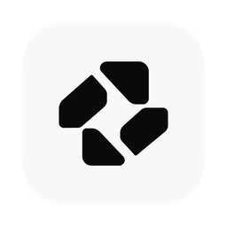

GyroApplications
GYRO
Gyro
Gyro
macOS 14+
poster zone — everything above the names
finder draws the names here
1 · Trim — the poster with everything non-load-bearing removed
Wordmark at 40 pt, sharing a baseline with the minimum-OS caption — one line instead of two ranks. Three dotted chevrons become a single 1 pt rule. No pill, no gradient.
1320 × 800png @2x
660 × 400 ptlayout
y 300–400free band